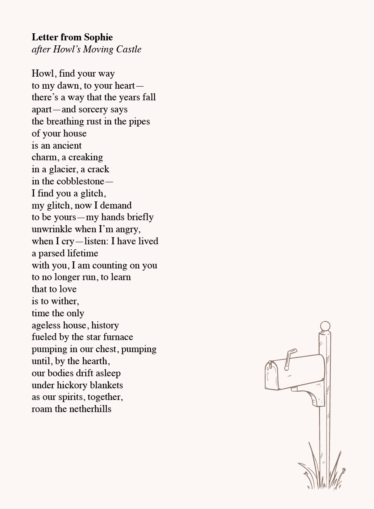
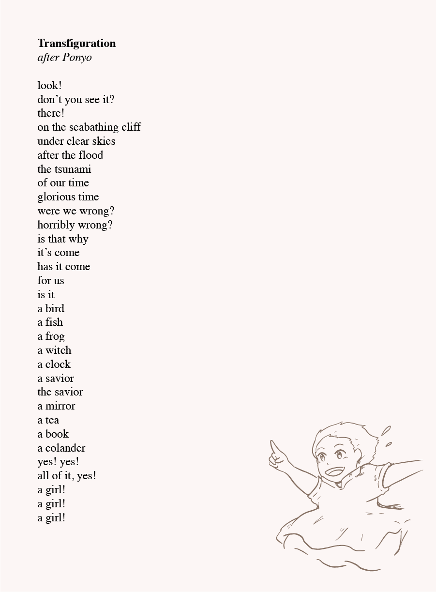

Poetry
As Asian Memory Project highlights different aspects of art, we've included poetry into the program written by Sammy Le inspired by Studio Ghibli films. These two poems are a snippet of what the show will provide.

